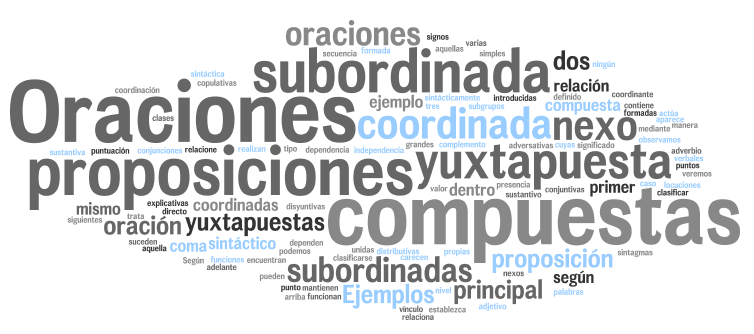

5. La oración compuesta:Yuxtaposición, Coordinación y Subordinación.

Hemos llegado al quinto y último capítulo del curso "Mejorar la sintaxis con las TIC". Así, a lo largo del siguiente módulo se pretenden alcanzar los siguientes objetivos:
Conocer las posibilidades que nos ofrecen ciertos editores de vídeos para crear nuestras propias presentaciones y grabaciones personales incluyendo imagen, sonido, transiciones y música.
Ser conscientes de las múltiples opciones de aplicación de las redes sociales** en el ámbito educativo.
Ser capaces de elaborar rúbricas digitales para el proceso de heteroevaluación, coevaluación y autoevaluación del alumnado.
A lo largo del siguiente módulo, vamos a hablar en todo momento de oración compuesta. Sin embargo, quiero señalar la posibilidad de establecer la distinción entre:
Llegados a este punto, os voy a plantear la FASE 1 y 2 (casa), ya que ésta las váis a confeccionar vosotros a partir de la herramienta que os propongo a continuación, y nos vamos centrar en aquellas herramientas tecnológicas que nos van a permitir trabajar los distintos conocimientos acerca de la oración compuesta con nuestros alumnos en el aula (Fase 3) y la forma de evaluación (Fase4).